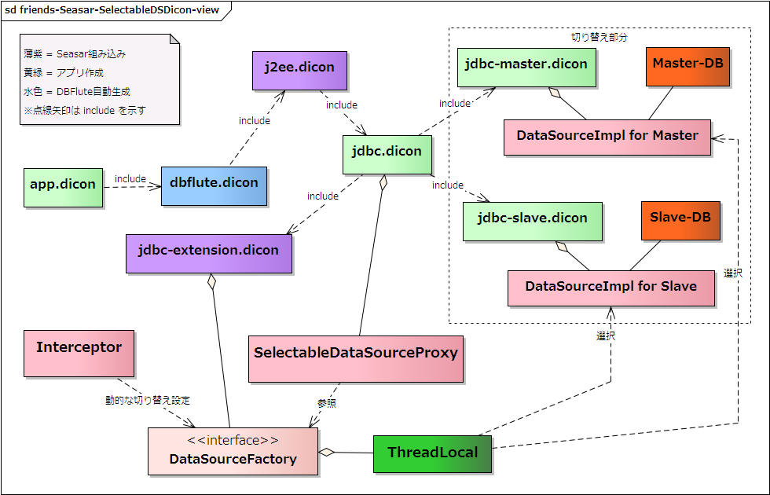

SelectableDataSource
冗長化複数DB
冗長化複数DBの構成の際に利用する機能です。DBアクセスの処理の際に、接続する DataSource を動的に切り替えて負荷分散などを実現する仕組みが Seasar(S2Container) には備わっています。DBFluteで冗長化複数DBを実現する場合も、その機能を活用すると良いでしょう。
SelectableDataSourceの使い方
Dicon構造
jdbc.dicon で定義している dataSource コンポーネントの実体を、SelectableDataSourceProxy クラスに変更し、二つ(もしくは三つ以上)の DB に対する jdbc-xxx.dicon を作成して include します。
jdbc.dicon には、SelectableDataSourceProxy の dataSource コンポーネントだけを定義し、それぞれの jdbc-xxx.dicon では、それぞれの DB に対応した "もともとの jdbc.dicon の構成" を定義します。
図 : SelectableDataSourceのDicon構造 
{kind=link}
ベタな実装方法
非常に単純でベタな実装方法は以下のようになります。MasterDB を fooDataSource、SlaveDB を barDataSource という名前で定義すると仮定します(以降、全ての例において同様)。
e.g. SelectableDataSource のベタな実装方法 @Java
protected MemberBhv memberBhv;
protected DataSourceFactory dataSourceFactory; // injected
public void fooAndBar() {
dataSourceFactory.setSelectableDataSourceName("foo");
Member member = ...
...
memberBhv.update(member); // foo の会員を更新
dataSourceFactory.setSelectableDataSourceName("bar");
MemberCB cb = ...
...
... = memberBhv.select(cb); // bar の会員を検索
}
dataSourceFactory は、デフォルトでは何の DataSource とも関連付いていないため、DBアクセスする前は必ず何かしらの DB を指定する必要があります。
通常、このように利用することはあり得ません。 仕組みをわかりやすく理解するための Example です。
現実的な実装方法
現実的には、DBアクセスのたびに指定するのはあり得ない感じなので、Interceptor などの共通処理において切り替えます。デフォルトのDBの設定と切り替えのロジックを実装します。
e.g. SelectableDataSource の現実的な実装方法 (Interceptor) @Java
protected DataSourceFactory dataSourceFactory; // injected
public Object invoke(MethodInvocation invocation) throws Throwable {
String current = dataSourceFactory.getSelectableDataSourceName();
try {
String selectableName = getSelectableDataSourceName();
dataSourceFactory.setSelectableDataSourceName(selectableName);
return invocation.proceed();
} finally {
dataSourceFactory.setSelectableDataSourceName(current);
}
}
protected String getSelectableDataSourceName(MethodInvocation invocation) {
if (hasSlaveAnnotation(invocation)) {
return "bar";
} else {
return "foo"; // MasterDB as default
}
}
protected boolean hasSlaveAnnotation(MethodInvocation invocation) {
// メソッドに SlaveDB を示すアノテーションが付いていたら true
// (そのアノテーションは自作)
return ...
}
この Interceptor は、DBアクセスをする可能性のあるプロセスの入り口となるコンポーネント、 および、DBアクセス先を切り替える可能性のあるコンポーネントに関連付けます。例えば、Page, Action, Service, Logicクラスなどです。 バリデーションやバリデーションエラーなどの処理の中でDBアクセスをする場合は、それらメソッドにも関連付ける必要があります。